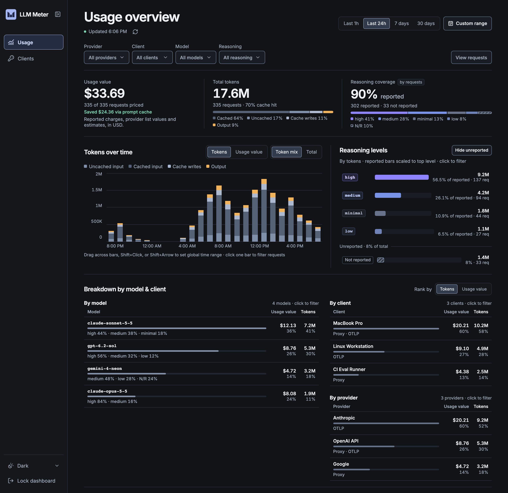

One meter for every model you run.
Self-hosted token, prompt cache, reasoning-level, and USD spend tracking across Claude Code, Codex, Gemini CLI, GitHub Copilot CLI, OpenCode, OpenAI-compatible SDKs, and signed-in Antigravity.
export DASHBOARD_TOKEN="$(openssl rand -hex 32)"
echo "Dashboard token: $DASHBOARD_TOKEN"
docker run --rm -p 127.0.0.1:8080:8080 \
-e DASHBOARD_TOKEN -e COOKIE_SECURE=false \
-v llm-meter-data:/data \
ghcr.io/mishankov/llm-meter:latest
Seven clients. Three identical HTTP paths.
The server and local relay expose the exact same endpoints—/otlp, /v1, and /antigravity—so moving between direct export and a local relay only changes the origin.
| Client | Metering method | Direct server endpoint | Client authentication | Guide |
|---|---|---|---|---|
| Claude Code | OpenTelemetry logs | <server>/otlp/v1/logs |
X-LLM-Meter-Key header | Setup |
| Codex | OpenTelemetry logs | <server>/otlp/v1/logs |
X-LLM-Meter-Key header | Setup |
| Gemini CLI | OpenTelemetry logs | <server>/otlp |
X-LLM-Meter-Key header | Setup |
| GitHub Copilot CLI | OpenTelemetry traces | https://<server>/otlp |
X-LLM-Meter-Key header (HTTPS) | Setup |
| OpenCode | OpenTelemetry traces | <server>/otlp |
X-LLM-Meter-Key header | Setup |
| OpenAI-compatible SDKs & CLIs | HTTP proxy | <server>/v1 |
Provider auth + X-LLM-Meter-Key | Setup |
| Signed-in Antigravity | HTTP proxy | <server>/antigravity |
Google auth + X-LLM-Meter-Key | Setup |
Every client keeps its own upstream provider account or API key. On direct proxy routes, LLM Meter validates and strips X-LLM-Meter-Key before forwarding upstream.
Direct when simple. Relayed when you want local isolation.
Choose the topology that matches your privacy and operational needs. All paths write into the same SQLite ledger and attribute requests by client key.
Direct to server — zero extra process
Export OpenTelemetry directly to <server>/otlp or proxy OpenAI-compatible and Antigravity traffic through /v1 and /antigravity with X-LLM-Meter-Key.
- Model traffic
- OTLP clients hit providers directly; direct proxy routes forward through LLM Meter.
- What the server sees
- Usage metadata for OTLP (content discarded); proxied requests for
/v1and/antigravity. - Best for
- Local deployments or single-CLI setups where you want no background relay process.
Direct to server
Ideal for local Docker setups or tools that already let you attach custom headers. Point your CLI or SDK straight at your LLM Meter origin with X-LLM-Meter-Key.
- Zero local daemon or extra port to manage
- OTLP receiver extracts token, cache, and reasoning counts and discards prompts
- Proxy validates and strips
X-LLM-Meter-Keyand session cookies upstream
Local relay (CLI, Docker, or macOS app)
Run one loopback relay on your workstation for every AI client—via the Go binary, Docker Compose, or the native macOS menu bar app.
- Single point of auth: store and rotate one key in macOS Keychain or a
0600proxy.key - Strips prompts and non-usage telemetry on
127.0.0.1before data leaves localhost - Queues up to 10,000 events in SQLite (
usage-outbox.db) with backoff retries and deduplication - Supports endpoint-only proxy clients (like Antigravity ACP) in
usage-onlyorremote-proxymode
Self-host in two steps.
Start the server with a single container or Go binary, create a client key in Clients, and point your tools at it.
Start the server
export DASHBOARD_TOKEN="$(openssl rand -hex 32)"
echo "Dashboard token: $DASHBOARD_TOKEN"
docker run --rm -p 127.0.0.1:8080:8080 \
-e DASHBOARD_TOKEN -e COOKIE_SECURE=false \
-v llm-meter-data:/data \
ghcr.io/mishankov/llm-meter:latestservices:
llm-meter:
image: ghcr.io/mishankov/llm-meter:latest
restart: unless-stopped
ports:
- "127.0.0.1:8080:8080"
environment:
DASHBOARD_TOKEN: ${DASHBOARD_TOKEN:?set DASHBOARD_TOKEN in .env}
COOKIE_SECURE: "true"
volumes:
- llm-meter-data:/data
volumes:
llm-meter-data:npm ci --prefix web && npm run build --prefix web
CGO_ENABLED=0 go build -tags embedui -o llm-meter .
export DASHBOARD_TOKEN="$(openssl rand -hex 32)"
LISTEN_ADDR=127.0.0.1:8080 COOKIE_SECURE=false DATA_DIR=./data ./llm-meter
Open http://localhost:8080, unlock with DASHBOARD_TOKEN, then open Clients to issue a client key (llmm_...).
Connect your tools
export CLAUDE_CODE_ENABLE_TELEMETRY=1
export OTEL_LOGS_EXPORTER=otlp
export OTEL_METRICS_EXPORTER=none OTEL_TRACES_EXPORTER=none
export OTEL_EXPORTER_OTLP_LOGS_PROTOCOL=http/protobuf
export OTEL_EXPORTER_OTLP_LOGS_ENDPOINT=http://localhost:8080/otlp/v1/logs
export OTEL_EXPORTER_OTLP_HEADERS="X-LLM-Meter-Key=<your-key>"
export OTEL_LOG_USER_PROMPTS=0 OTEL_LOG_ASSISTANT_RESPONSES=0
claude[otel]
log_user_prompt = false
log_agent_responses = false
log_sse_deltas = false
[otel.exporter."otlp-http"]
endpoint = "http://localhost:8080/otlp/v1/logs"
protocol = "json"
[otel.exporter."otlp-http".headers]
"X-LLM-Meter-Key" = "${LLM_METER_KEY}"export GEMINI_TELEMETRY_ENABLED=true GEMINI_TELEMETRY_TARGET=local
export GEMINI_TELEMETRY_OTLP_PROTOCOL=http
export GEMINI_TELEMETRY_OTLP_ENDPOINT=http://localhost:8080/otlp
export GEMINI_TELEMETRY_OTLP_HEADERS="X-LLM-Meter-Key=<your-key>"
export GEMINI_TELEMETRY_LOG_PROMPTS=false GEMINI_TELEMETRY_TRACES_ENABLED=false
geminicurl http://localhost:8080/v1/responses \
-H "Authorization: Bearer $OPENAI_API_KEY" \
-H "X-LLM-Meter-Key: <your-key>" \
-H "Content-Type: application/json" \
-d '{"model":"gpt-5","input":"Summarize today'\''s release notes"}'./llm-meter-relay \
--mode usage-only \
--telemetry-listen=127.0.0.1:4318 \
--target https://proxy.example.com \
--key-file "$HOME/.config/llm-meter/relay/proxy.key" \
--data-dir "$HOME/.config/llm-meter/relay/data"Also supports GitHub Copilot CLI, OpenCode, and signed-in Antigravity. See all snippets in the Configuration Guide.
Deterministic USD pricing, cached locally.
Every request resolves cost through a four-step hierarchy. Requests without complete rate data are labeled Unpriced—never fabricated.
-
Provider-reported amounts
Preserves exact charges reported by the client or provider, including
$0, alongside provider list values. -
PRICING_FILEoverrides Matchesprovider/modelfirst, thenmodel, in USD per million tokens for private gateways or custom contracts. - Automatic daily catalogs Syncs Models.dev and OpenCode Go at startup and every 24 hours, persisted in SQLite so upstream feed outages never lose rates.
-
Built-in OpenAI rates
Includes long-context (>272k input) multipliers, service tiers (
batch,flex,fast,priority), and background completion discounts.
{
"my-model": {
"input": 2,
"cachedInput": 0.1,
"output": 10,
"cacheWrite": 2.5
}
}One Go binary. One SQLite file.
Engineered to run quietly on a homelab box, VPS, or laptop with no external database or background maintenance.
- Server runtime
- Single Go binary serving dashboard UI (
-tags embedui), OTLP receiver, HTTP proxy, and/healthzon one port. - Storage
- Embedded SQLite in WAL mode (
llm-meter.db) for clients, SHA-256 key digests, request ledger, and cached pricing snapshots. - Container images
- Multi-arch
ghcr.io/mishankov/llm-meter:latestandllm-meter-relay:latestforlinux/amd64andlinux/arm64, running non-root. - macOS menu bar app
- Native menu bar relay with Keychain key storage, local HTTPS certificate settings, durable outbox queues, and one-keystroke setup snippets.
- Reasoning & cache depth
- Breaks down uncached input, cached input, cache writes, output, prompt cache USD savings, and reasoning effort levels per request.
- Key lifecycle
- Issue multiple concurrent keys per client for zero-downtime rotation, rename clients without breaking keys, and archive while preserving history.
Keep every token on your own ledger.
Open-source, self-hosted, and ready to run in Docker or natively on Linux and macOS.